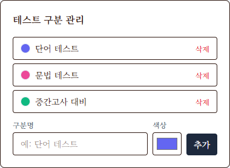
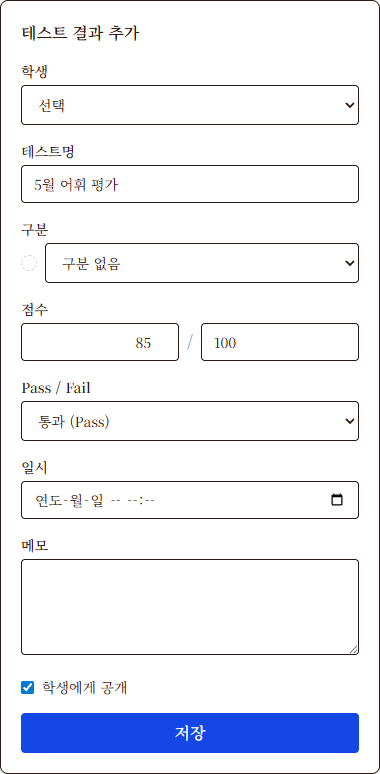
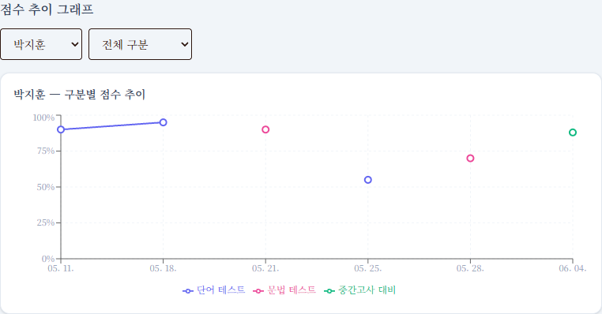
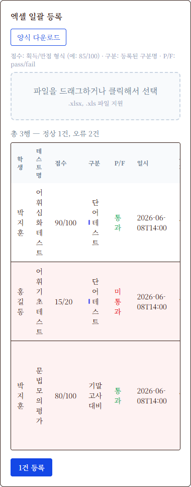
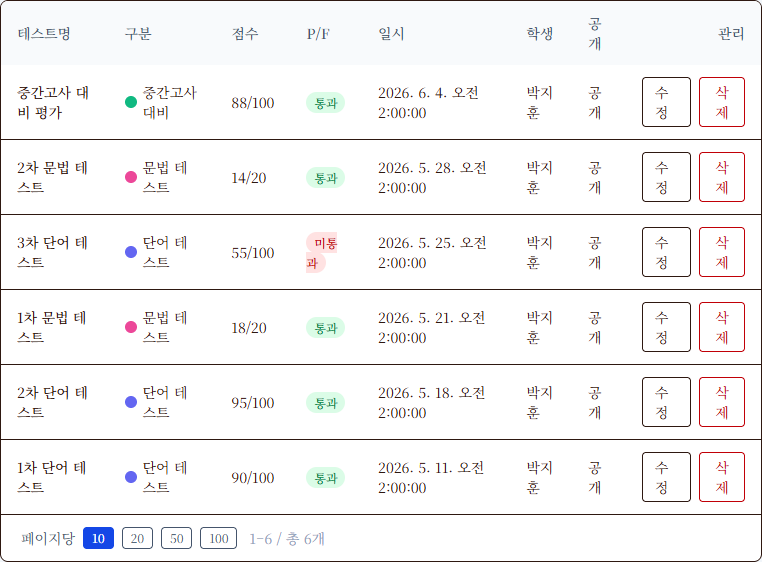

등록되는 테스트 결과를 종류별(예: 단어 테스트, 문법 테스트, 중간고사 대비 등)로 분류할 수 있는 구분값을 만들고 색상을 매핑할 수 있습니다.
💡 강사별 격리 관리
테스트 구분은 강사별로 완전히 분리되어 관리됩니다. 로그인한 본인 계정으로 생성한 구분만 표시되며, 다른 강사님의 환경에 영향을 주지 않습니다.
본 매뉴얼은 더 코어 학원 관리 시스템의 **수업관리 > 특정 수업 > 테스트** 페이지의 주요 기능을 설명합니다. 강사님들이 학생들의 성적 데이터를 직관적으로 기록하고, 엑셀로 일괄 업로드하며, 그래프를 통해 성적 추이를 정밀하게 분석할 수 있는 프로세스를 제공합니다.
등록되는 테스트 결과를 종류별(예: 단어 테스트, 문법 테스트, 중간고사 대비 등)로 분류할 수 있는 구분값을 만들고 색상을 매핑할 수 있습니다.
테스트 구분은 강사별로 완전히 분리되어 관리됩니다. 로그인한 본인 계정으로 생성한 구분만 표시되며, 다른 강사님의 환경에 영향을 주지 않습니다.
단어 테스트), 색상 팔레트 블록을 클릭하여 원하는 카테고리 테마 색상을 선택합니다.
구분을 삭제할 때, 해당 구분과 연결되어 있던 기존 테스트 결과들의 구분 필드는 자동으로 초기화(구분 없음 상태)됩니다. 해당 테스트의 원본 성적이나 메모 데이터 자체는 삭제되지 않습니다.
우측 사이드바의 "테스트 결과 추가" 폼을 통해 개별 학생의 성적을 실시간으로 입력할 수 있습니다.
| 입력 필드 상태 | 시스템 저장 형태 | 추이 그래프 환산 |
|---|---|---|
획득: 85 / 만점: 100 |
85/100 | 85% 비율로 표현 |
획득: 18 / 만점: 20 |
18/20 | 90% 비율로 표현 (18 / 20 * 100) |
획득: 9 / 만점: (비워둠) |
9 | 9% 비율로 표현 (만점이 없으면 단독 수치를 %로 사용) |

P/F 선택에 따라 테스트 결과 목록 테이블에서 다음과 같은 배지가 제공됩니다:
- → 해당없음(비워둠)인 경우 대시 표기
누적된 성적 데이터를 시각적인 꺾은선형 차트로 환산하여 보여주는 도구입니다. 학생을 선택하는 즉시, 해당 학생이 응시한 모든 테스트 날짜와 성적 변화 추이가 그래프로 시뮬레이션됩니다.

서로 다른 만점 값을 가진 성적들을 공정하게 스케일링하기 위해, Y축은 **0%부터 100% 비율**로 자동 정규화되어 차트 선이 그려집니다.
85/100 → 85% 로 플로팅18/20 → 90% 로 플로팅9) → 해당 값 자체를 % 비율값인 9%로 취급하여 플로팅학생 수가 많고, 누적된 테스트 횟수가 많을 경우 엑셀 템플릿 파일로 일련의 점수를 손쉽게 가공하여 대량 업로드할 수 있습니다.
| 컬럼명 | 필수여부 | 내용 설명 | 기입 형식 예시 |
|---|---|---|---|
| 학생 | 필수 | 수업에 배정된 학생 이름 (정확히 일치해야 함) | 박지훈 |
| 테스트명 | 필수 | 테스트의 제목 | 5월 문법 테스트 |
| 점수 | 필수 | 획득/만점 분수 문자열 또는 단독 수치 | 85/100 또는 18/20 |
| 구분 | 선택 | 테스트 구분명 (구분 관리 탭에 미리 등록 필수) | 단어 테스트 |
| P/F | 선택 | pass / fail 식별 문자열 (대소문자 무관) | pass 또는 fail |
| 일시 | 필수 | 날짜 및 시간 데이터 | 2024-05-10 14:00 |
| 메모 | 선택 | 학업 상태나 사후 평가 등 부가 텍스트 | 재시험 예정 |
| 공개 | 선택 | Y 또는 N (비워둘 시 기본값 Y) | Y |
테스트_일괄등록_양식.xlsx 파일을 받습니다.
| 오류 코드 / 메시지 | 원인 및 현상 | 조치 방안 |
|---|---|---|
| 학생 없음: [이름] | 입력한 학생 이름이 현재 수업(반) 수강생 명단에 존재하지 않음 | 학생 이름 오타를 확인하거나, 반 수강 등록 상태를 확인하여 교정 |
| 구분 없음: [구분명] | 입력한 구분명이 테스트 구분 목록(강사 본인 생성)에 없음 | 해당 카테고리를 '구분 관리'에 먼저 추가하거나, 엑셀 텍스트를 정확히 일치시킴 |
| 학생 필수 / 테스트명 필수 / 점수 필수 | 특정 행의 필수 컬럼 데이터가 공란으로 비워짐 | 엑셀 파일을 재수정하여 필수 정보를 기록 후 업로드 |
| 일시 필수 | 테스트 일시 항목이 누락되었거나 날짜 규격 오류 발생 | YYYY-MM-DD HH:MM 규격을 유지하여 셀 데이터 서식을 텍스트 또는 일반 날짜로 지정 |
등록된 테스트 성적 내역을 한눈에 격자형으로 모니터링할 수 있는 메인 대시보드 리스트입니다.
| 컬럼명 | 필드 설명 및 기능 |
|---|---|
| 테스트명 | 수업 중 출제된 테스트 제목 |
| 구분 | 매핑된 카테고리의 대표 뱃지(색상 원 ● + 카테고리명) |
| 점수 | 입력된 획득/만점 분수 문자열 또는 원점수 |
| P/F | 통과/미통과 뱃지 표식 (Pass는 초록 뱃지, Fail은 빨강 뱃지) |
| 일시 | 테스트를 실제 집행한 년/월/일 및 시간 정보 |
| 학생 | 피평가 수강생 이름 |
| 공개 | 학생용 모바일/웹 앱 대시보드 성적표에 공개할지 여부 (공개/비공개) |
| 관리 | 개별 점수 수정 페이지 이동 단추 및 영구 삭제 단추 |
